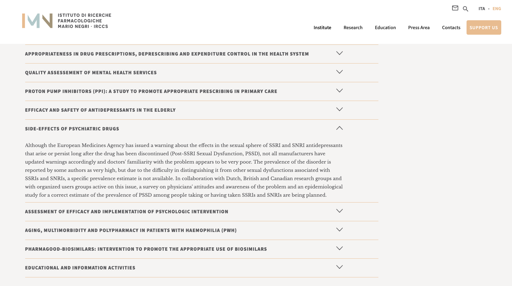

È in fase di avvio, da parte dell’Istituto di Ricerche Farmacologiche Mario Negri IRCCS, uno studio epidemiologico sulla disfunzione sessuale post-SSRI e SNRI (PSSD), nonché un’indagine sulle attitudini e la consapevolezza del problema da parte dei medici, in collaborazione con gruppi di ricerca britannici, canadesi e olandesi e con gruppi organizzati di utenti attivi su questo tema.

